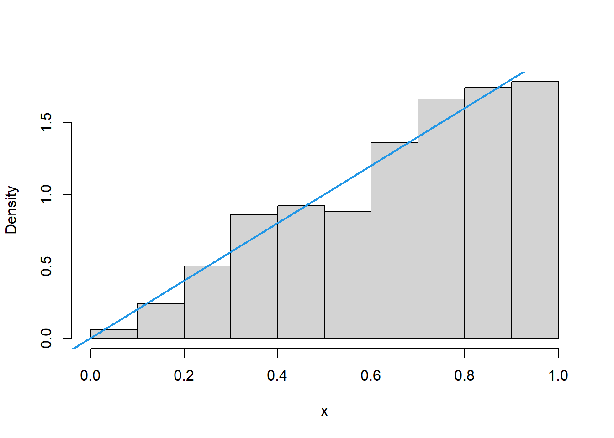

set.seed(123)
cadeia1 <- .1
cadeia2 <- .5
for(i in 2:200){
cadeia1[i] <- runif(1, 1 - cadeia1 [i - 1] , 1)
cadeia2[i] <- runif(1, 1 - cadeia2 [i - 1] , 1)
}
# gráfico das duas trajetórias
plot(cadeia1,cadeia2, type = "l", col =1)
points(cadeia1[1] , cadeia2[1] , pch=16) # ponto inicial16 Tópicos em Método de Monte Carlo via Cadeias de Markov
16.1 Cadeias de Markov
A coleção \({\X(t),t\inT\}\) é um processo estocástico se \(X(t)\) é uma variável aleatória para cada \(t\in T\).
A variável \(X(t)\) é denominada estado. O processo é dito ser a tempo discreto se \(T\subseteq \mathbb{Z}\).
Em um processo a tempo discreto, é usual utilizar a notação \(X(t)\equiv X_t\).
O processo estocástico \(X_0,X_1,X_2,\ldots\) é uma cadeia de Markov de ordem \(d\) se
\[P(X_n\in A|X_{n−1}=x_{n−1},…,X_0=x_0)=P(X_n\in A|X_{n−1}=x_{n−1},…,X_{n−d}=x_{n−d}).\]
Uma cadeia de Markov de ordem \(d\) é dita ser homogênea se, para qualquer \(m>0\) natural,
\[P(X_n\in A|X_{n−1}=x_{n−1},…,X_{n−d}=x_{n−d})=P(X_{n+m}\in A|X_{n+m−1}=x_{n−1},…,X_{n+m−d}=_{xn−d}).\]
Estamos interessados nas cadeias homogêneas de ordem \(d=1\), que doravante serão denominadas simplesmente por cadeias de Markov.
A evolução da cadeia de \(X_n\) até \(X_{n+1}\) é denominada transição em 1 passo. A densidade \(k(.|y)\) que satisfaz
\[P(X_{n+1}\in A|X_n=y)=\int_A k(x|y)dx\]
é denominada núcleo de transição (ou núcleo de transição em 1 passo. Se os estados forem variáveis discretas, \(k(.|y)\) será uma função de probabilidade e a discussão é análoga.
Uma cadeia de Markov
Considere a seguinte cadeia de Markov:
\[X_n|X_{n−1}=y∼\hbox{Uniforme}(1−y,1).\]
Abaixo, simulamos duas trajetórias de tamanho 200 deste processo, cada uma com um valor diferente para \(x_0\).
Pelo gráfico acima observamos que, independente de onde a cadeia começou, as duas simulações se concentraram na mesma região do gráfico após algumas iterações. A figura abaixo apresenta a função densidade estimada via método do núcleo para as duas trajetórias simuladas, excluindo os 10 primeiros pontos, de onde pode-se inferir que as distribuições são as mesmas.
plot(density(cadeia1[-(1:10)]), lwd = 2, main = "")
lines(density(cadeia2[-(1:10)]), lty = 2, lwd = 2)A seguir, vamos discutir em quais situações esta distribuição exsite.
16.1.1 A distribuição estacionária
Dizemos que \(\pi(.)\) é a densidade da distribuição estacionária de uma cadeia de Markov se
\[\pi(y)=\int \pi(x)k(y|x)dx.\] Note que isto implica que \(X_i∼\pi()\), ou seja, a distribuição marginal da cadeia é a mesma.
Portanto, ao simular uma trajetória de uma cadeia de Markov com distribuição estacionária, os valores simulados são identicamente distribuídos segundo \(\pi(.)\).
Se o valor inicial \(x_0\) utilizado para gerar a amostra estiver dentro da região de alta densidade de \(\pi(.)\), os próximos valores que serão gerados já são da distribuição estacionária. Caso contrário, defina \(k^{(d)}(.|y)\) como o núcleo de transição em \(d\) passos. Observe que tal núcleo sempre pode ser obtido do núcleo em 1 passos pois:
\[k^{(2)}(x|x_0)=\int k(x|z)k(z|x_0)dz\]
\[k^{(3)}(x|x_0)=\int k^{(2)}(x|z)k(z|x_0)dz\] e assim por diante. Contudo, se há distribuição estacionária, então \[\pi(x)=\lim_{n\rightarrow\infty} k^{(n)}(x|x_0).\] Isto implica que a cadeia eventualmente vai construir uma trajetória até a região de alta densidade de \(\pi(.)\).
As condições para existência da distribuição estacionária são:
Existe \(n>0\) tal que \(P(X_n\in A|X_0=x_0)\) para quaisquer \(A\) e \(x_0\), sendo que o número médio de passos para realizar a transição é finito.
\(P(X_n\in A|X_0=x_0)\) não é uma função periódica em \(n\)
Simulando de uma distribuição estacionária
Considere novamente a seguinte cadeia de Markov:
\[X_n|X_{n−1}=y∼\hbox{Uniforme}(1−y,1).\]
Vamos simular uma trajetória de tamanho 500 começando em \(x_0=.5\)
set.seed(123)
x <- .5
for(i in 2:500){
x[i] <- runif(1, 1 - x [i - 1] , 1)
}ts.plot(x)
abline(h=.5,lty=2)Abaixo, apresentamos o histograma da distribuição estacionária simulada pela cadeia.
hist(x, freq = F, main = '')Agora, note que \(\pi(y)=2y\) é distribuição estacionária, uma vez que
\[2y=\pi(y)=\int \pi(u)k(y|u)du=\int 2u\frac{I(1−u<y<1)}{u}du=2∫^{1}_{1−y}du=2y\] Vamos adicionar essa densidade no histograma obtido:
hist(x, freq = F, main ="")
abline(0,2, lwd = 2, col =4)
16.2 Introdução aos métodos de Monte Carlo via Cadeias de Markov
Os métodos para simular a distribuição \(f(x)\) gerando variáveis aleatórias utilizando uma cadeia de Markov são denominados métodos de Monte Carlo via Cadeias de Markov (MCMC).
Diferente dos outros métodos de simulação, os MCMCs exigem alguns cuidados para garantir que estamos simulando variáveis independentes e identicamente distribuídas.
Ao longo desta aula, vamos utilizar a cadeia do exemplo abaixo.
Uma cadeia como exemplo
Considere uma cadeia de Markov com o seguinte núcleo de transição,
\[X_t|X_{t−1}=y\sim N(\alpha y,1)\] com \(\alpha\in(−1,1)\). Este núcleo tem a seguinte representação estocástica:
\[X_t=\alpha X_{t−1}+e_t,\] onde \(e_t\simN(0,1)\). Note que \[\begin{align}X_{t+2}&=\alpha X_{t+1}+e_{t+1}=\alpha(\alpha X_t+e_t)+e_{t+1}\\&=\alpha^2X_t+\alpha e_{t+1}+e_t\end{align}\] ou seja \[X_{t+2}|X_t=y\sim N(\alpha^2y,\alpha^2+\alpha)\]. É fácil induzir que \[X_{t+n}|X_t∼N\left(\alpha^n y,\sum_{j=0}^n \alpha^j\right).\]
Logo \[\pi(x)=\lim_{n\rightarrow \infty} k^{(n)}(x|y)=\phi\left(x|0,\frac{1}{1-\alpha}\right),\] onde \(\phi(x|\mu,\sigma^2)\) é a funçãon densidade da normal. Para os nossos exemplo, utilizaremos \(\alpha=0,7\).
O objetivo dos métodos do tipo MCMC é desenvolver uma cadeia de Markov, com certo núcleo de transição \(k(x_i|x_{i−1})\), que tenha como distribuição estacionária a distribuição de interesse, doravante denotada por \(f(x)\).
Em um mundo ideal, a simulação da cadeia deveria começar em um ponto \(x_0\) com alta probabilidade sob a distribuição estacionária. Como isto em geral não é possível, só podemos garantir que existe uma iteração \(n\) tal que a partir dela os valores simulados são da distribuição estacionária. Para nos auxiliar na escolha deste valor \(n\) podemos utilizar um traceplot
Traceplot O gráfico com linhas unindo os pontos \((i,x_i)\) é denominado traceplot. Um de seus objetivos é auxiliar a detectar em qual momento a cadeia começou a amostrar pontos de f(.) (ou equivalentemente, em que momento a cadeia entrou em equilíbrio).
O traceplot de um processo estacionário com variância finita tem um comportamento típico de pontos em torno da média da distribuição estacionária. Deste modo, ele é uma ferramenta exploratória que nos auxilia a detectar se a cadeia não está em equilíbrio ao perceber um padrão fora do que se esperaria de uma distribuição estacionária.
Explicando o traceplot
Abaixo, ilustramos o traceplot de duas cadeias simuladas, sendo que a única diferença entre elas é o valor de \(x_0\)
A distribuição estacionária está representada ao longo do eixo das ordenadas com as linhas tracejadas em azul representando os quantis 99,5% e 0,05%. Mostramos dois traceplots (linhas pretas) com valores distintos de x0
No primeiro, escolhemos \(x_0=0\) que é a moda da distribuição estacionária e na segunda \(x0=−10\), um valor extremo.
set.seed(123)
cadeia1 = 0
cadeia2 = -10
for(n in 1:50){
cadeia1[n+1] = .7*cadeia1[n]+rnorm(1)
cadeia2[n+1] = .7*cadeia2[n]+rnorm(1)
}
ts.plot(cadeia1, ylim=c(-10,10))
abline(h = qnorm(.995,0,sqrt(1/.3)), lty = 2)
abline(h = qnorm(.005,0,sqrt(1/.3)), lty = 2)ts.plot(cadeia2, ylim=c(-10,10))
abline(h = qnorm(.995,0,sqrt(1/.3)), lty = 2)
abline(h = qnorm(.005,0,sqrt(1/.3)), lty = 2)Com \(x_0=0\), o traceplot não dá evidências contra a hipótese de equilíbrio, pois os pontos simulados condizem com o que é esperado para a distribuição estacionária. Já com \(x_0=−10\), temos que o traceplot dá evidências de que a convergência ocorreu após 3 ou 4 iterações.
Podemos utilizar os dois conjuntos simulados, desde que as 4 primeiras simulações da segunda cadeia sejam descartadas. Tal descarte é denominado burn-in.
Lembremos que nosso objetivo é simular variáveis independentes e identicamente distribuídas de uma distribuição alvo. Já o objetivo de um método MCMC é gerar variáveis dependentes e identicamente distribuídas segundo a distribuição alvo.
Considerando as variáveis simuladas (após o burn-in) \(x_1,x_2,\ldots,x_n\), a dependência (linear) das variáveis obtidas via MCMC é estimada pela função de autocorrelação.
\[r(h)=\sum_{i=1}^{n−h}\frac{(x_i−\bar{x})(x_{i+h}−\bar{x})}{\sum_{i=1}^n (x_i−\bar{x})^2}.\]
Para termos uma amostra de variáveis aproximadamente independentes, podemos remover o efeito da autocorrelação encontrando o valor \(h′\) tal que \(r(h′)≈0\) e ficar somente com as variáveis \(x1,x1+h′,x1+2h′,\ldots\). O traceplot desta subamostra deve apresentar os pontos em torno da média mas sem um padrão.
Voltemos ao Exemplo 9.2, com \(x_0=0\). Vamos simular uma trajetória desta cadeia de tamanho \(n=400\) (lembre-se que neste caso o burn-in não é necessário).
set.seed(123)
n <- 400
x <- 0
for(i in 2:n) x[i] <- .7*x[i-1] + rnorm(1)
# autocorrelações (valores e gráfico)
(acf(x))
Autocorrelations of series 'x', by lag
0 1 2 3 4 5 6 7 8 9 10
1.000 0.627 0.375 0.225 0.101 0.039 -0.011 0.017 0.022 0.001 -0.027
11 12 13 14 15 16 17 18 19 20 21
-0.057 -0.088 -0.062 -0.050 -0.046 -0.106 -0.097 -0.085 -0.058 -0.023 0.008
22 23 24 25 26
0.049 0.006 -0.031 -0.037 -0.054 # note o efeito indesejado da dependência, ao fazer o gráfico de dispersão entre (x_i, x_{i+1})
plot(x[-1],x[-n])Note que a autocorrelação estimada em h=5 é \(r(5)=0,039\). Podemos então retirar a subamostra \(x1,x6,x11,...\) para representar a nossa amostra de variáveis independentes e identicamente distribuídas. Abaixos, mostramos que o efeito indesejado da dependência desaparece.
i <- seq(1, n, 5)
# subamostra das variáveis iid
x_h <- x[i]
# autocorrelação da subamostra
acf(x_h)# o efeito da dependência some. Veja, por exemplo
n_h <- length( x_h )
plot( x_h[ -1 ], x_h[ -n_h ] )